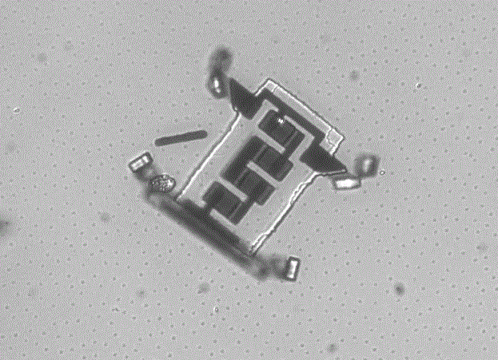

Des micros-robots injectables pourraient révolutionner la médecine
Date : 27 août 2020
Après 50 ans de loi de Moore, la recherche s’en rapproche des scientifiques de l’Université de Cornell ( Université privée à Ithaca, État de New York ) ont réussi à créer des robots microscopiques à base de semi-conducteurs qui peuvent être produits en masse : Ils mesurent environ 40×50 micromètres, pour 5 micromètres d’épaisseur. À titre de comparaison, le diamètre d’un cheveu moyen est de 75 micromètres. Pour le produire, il faut introduire la plaque de silice dans une de presse qui va déposer les différents éléments conducteurs; puis les fameuses « pattes » électrochimiques, avant d’enfermer le tout dans une couche de silice. Ensuite le tout est intégré à une couche de substrat qui sera ensuite dissoute pour libérer les robots.

Comment utiliser ces nanorobots :
Les micros-robots : Imaginons un patient atteint d'un cancer avec une tumeur logée dans les profondeurs du cerveau. Dans certains cas même les meilleurs chirurgiens ne peuvent rien contre certaines tumeurs. Alors, qu'il suffirait d’injecter, ou d’avaler une pilule remplie de micros-robots qui iraient détruire minutieusement la tumeur, cellule par cellule jusqu'à qu'elle ne devienne plus gênante pour le patient.